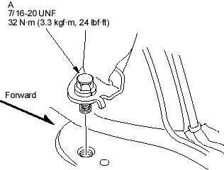
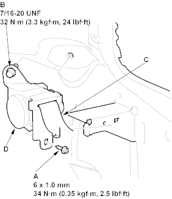

NOTE: Check the rear seat belts for damage and replace them if necessary. Be careful not to damage them during removal and installation.
Rear Seat Belt
- Remove the rear side trim panel (see page 20-30).
- Remove the lower anchor bolt (A).

- Remove the retractor mounting self-tapping ET screw (A) and the retractor bolt (B), then remove the rear seat belt (C) and retractor (D).

- Install the seat belt in the reverse order of removal and note these items:
- If the threads on the retractor mounting self-tapping ET screw are worn out, use an oversized self-tapping ET screw made specifically for this application.
- Check that the retractor locking mechanism functions as described, refer to the '01 Civic Shop Manual on this CD (see page 23-20).
- Before installing the anchor bolt, make sure there are no twists or kinks in the rear seat belt.